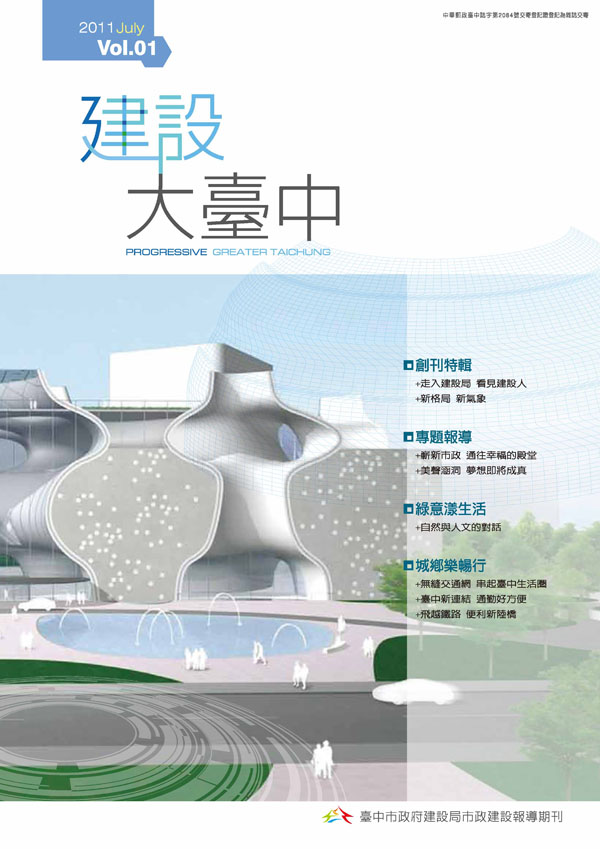
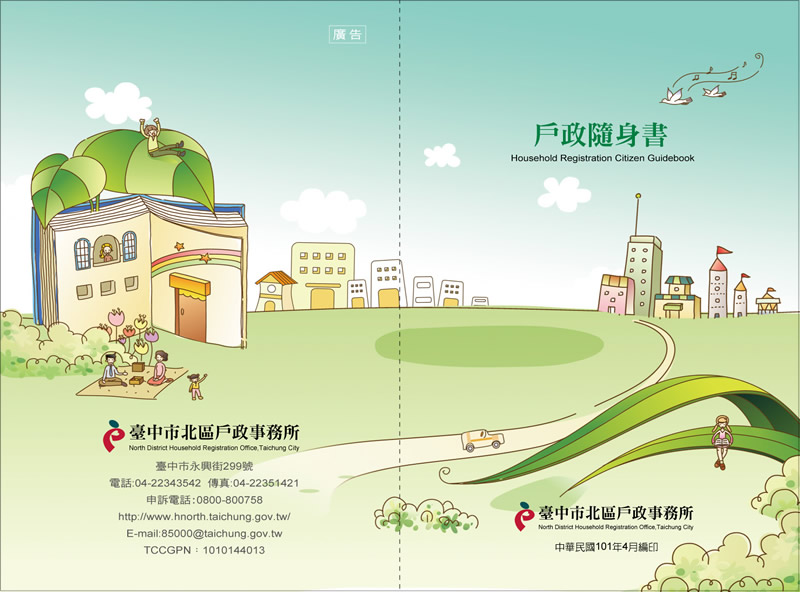

字級
:::
現在位置首頁 > 本頁標題
線上電子書
共 430 筆資料，第19/43頁，
-

第一本書，第一本書
- 出版單位：臺中市政府法制局
- 出版日期：2019-4-19
- 點閱數：138
- ISBN:9876543210123
- GPN:1234567890
-

建設大臺中 Vol.23
- 出版單位：臺中市政府建設局
- 出版日期：2019-4-1
- 點閱數：1,367
- ISBN:22243356
- GPN:2010002240
-

建設大臺中
摘要說明一二三四五六七八九十一二三四五六七八九十一二三四五六七八九十
- 出版單位：臺中市政府建設局
- 出版日期：2012-02-16
- 出版頻率：不定時
- 點閱數：84
-
老人保護手冊
摘要說明一二三四五六七八九十一二三四五六七八九十一二三四五六七八九十一二三四五六七八九十一二三四五六七八九十一二三四五六七八九十
- 出版單位：臺中市政府社會局
- 出版日期：2012-02-16
- 出版頻率：不定時
- 點閱數：45
-
老人福利服務措施手冊
摘要說明一二三四五六七八九十一二三四五六七八九十一二三四五六七八九十一二三四五六七八九十一二三四五六七八九十一二三四五六七八九十
- 出版單位：臺中市政府社會局
- 出版日期：2012-02-16
- 出版頻率：不定時
- 點閱數：7
- ISBN:9876543210123
- GPN:1234567890
-
臺中市政府勞工局簡介摺頁(事業單位版)
- 出版單位：臺中市政府勞工局
- 出版日期：2012-02-16
- 出版頻率：不定時
- 點閱數：98
- ISBN:9876543210123
- GPN:1234567890
-
書名書名書名書名書名書名書名書名書名書名書名書名
摘要說明一二三四五六七八九十一二三四五六七八九十一二三四五六七八九十一二三四五六七八九十一二三四五六七八九十一二三四五六七八九十
- 出版單位：臺中市政府建設局臺中市政府建設局
- 出版日期：2012-02-16
- 出版頻率：不定時
- 點閱數：27
- ISBN:9876543210123
- GPN:1234567890
-
台中市觀光旅遊導覽護照＿台中玩得瘋(wonderful)
摘要說明一二三四五六七八九十一二三四五六七八九十一二三四五六七八九十一二三四五六七
- 出版單位：新聞處觀光科
- 出版日期：2012-02-16
- 出版頻率：不定時
- 點閱數：209
- ISBN:9876543210123
- GPN:1234567890
-

書名書名書名書名
摘要說明一二三四五六七八九十一二三四五六七八九十一二三四五六七八九十一二三四五六七八九十一二三四五六七八九十
- 出版單位：臺中市政府民政局
- 出版日期：2012-02-16
- 出版頻率：不定時
- 點閱數：14
- ISBN:9876543210123
- GPN:1234567890
共 430 筆資料，第19/43頁，